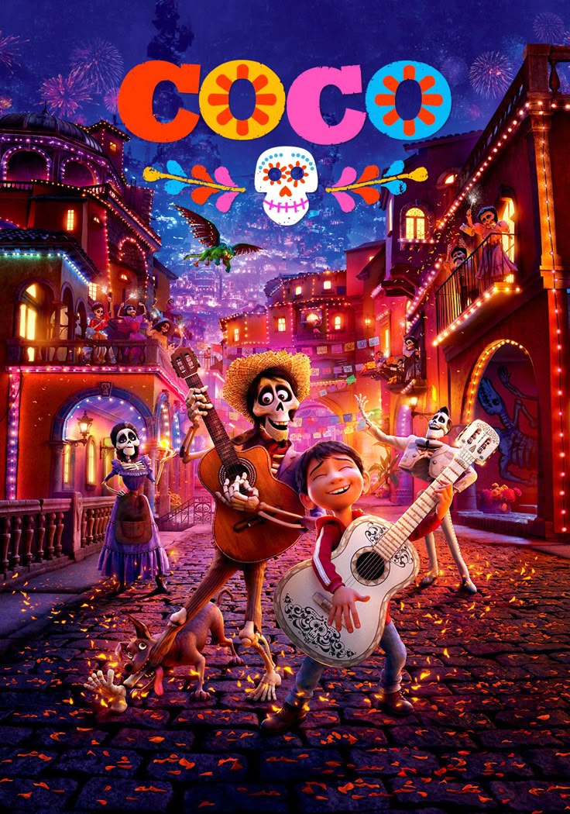
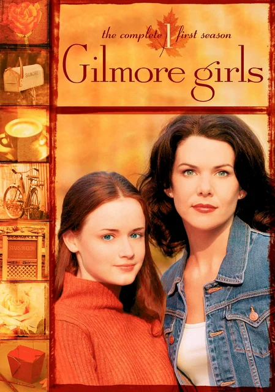
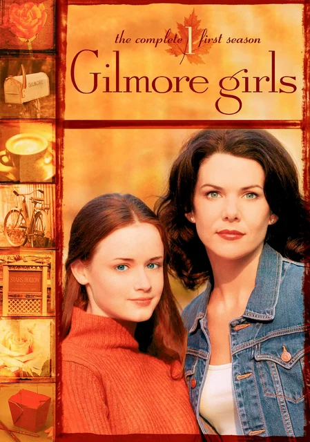

Músicas
Eu amo ouvir músicas e em relação à gêneros musicais, me considero eclética. Então, aqui estão algumas músicas que eu gosto de escutar:
Filmes/Séries
Sou uma pessoa com um senso crítico meio duvidoso para filmes e séries pois adoro ver filmes "ruins", como por exemplo aqueles filmes brasileiros adolescentes. Mesmo assim, tenho gêneros favoritos. São eles romance, terror, animação.
Aqui estão algumas séries ou filmes que gosto:
Filmes



Séries
 


Comidas
Em relação ao meu paladar, também é um pouco peculiar. Quando eu era mais nova eu não comia pizza, hambúrguer e nem batata frita; por algum motivo eu não gostava na época. Eu não gosto de chocolate, mas amo brigadeiro, brownie, cookie. Da mesma forma, eu não gosto de queijo mas amo pizza, e adoro por queijo parmesão ralado na minha massa. Outros alimentos que não curto muito são: cebola, cogumelo, azeitona, carangueijo, camarão... Em compensação, eu amo tomate, salmão, laranja, uva.
Top 3 Refeições Favoritas
1. Strogonoff